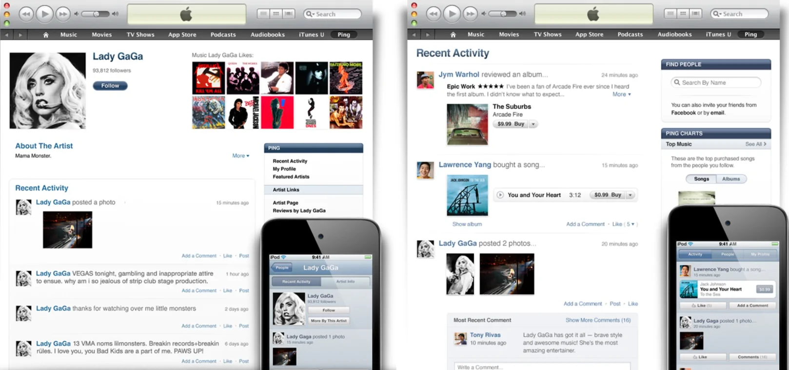
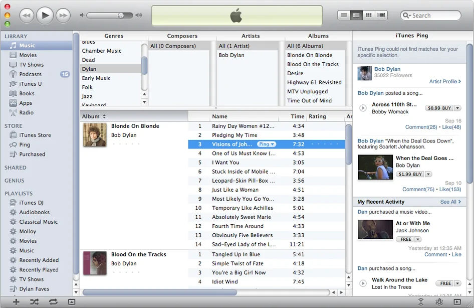
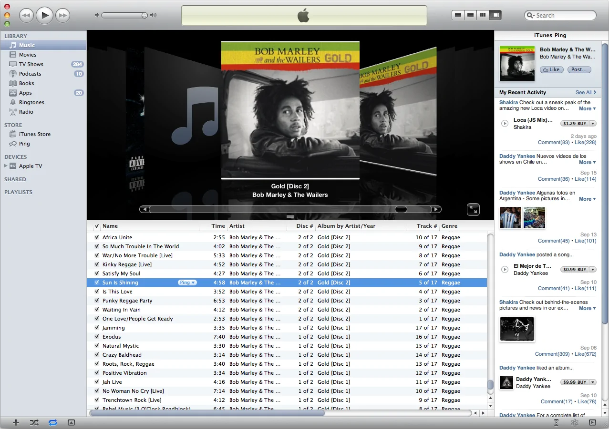

Platform: Windows / macOS desktop application
Your screenshot shows: The main iTunes library view



The problem to fix: iTunes started as a simple music player but grew into a single app handling music, podcasts, films, TV shows, audiobooks, app purchases, and iPhone/iPad device backups. Everything was crammed into one sidebar. Users trying to do one simple task — like play a song — had to navigate past a dozen unrelated features to get there.Your task: Redesign the main iTunes screen so that a user who just wants to play music can do so immediately, without encountering features they do not need at that moment.
Focus on: Feature prioritisation, task flow, and information architecture
Your pitch must answer: "What did you remove from the main view, and where did those features go instead?"